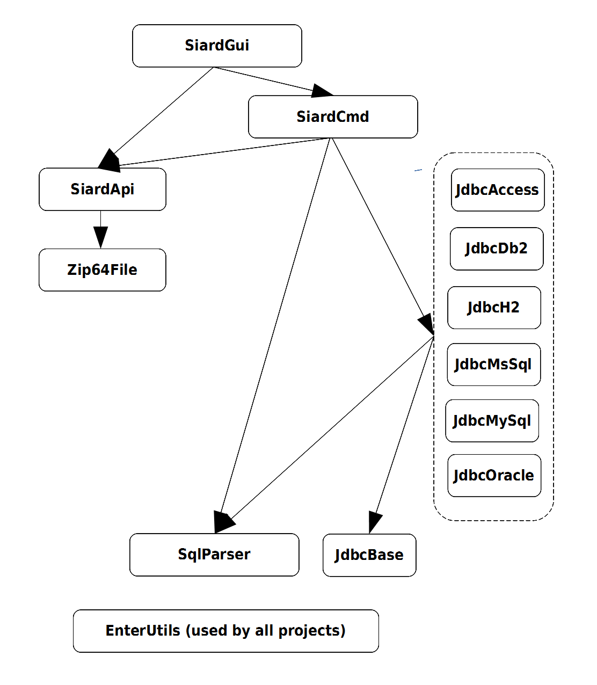
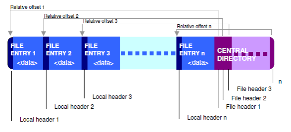

Zip64File - Developers' Manual - Architecture
Architecture
The project Zip64File is part of the SIARD (Software-Independent Archival of Relational Databases) Suite. The description of its architecture has two parts:
- Global architecture of SIARD Suite and the position of Zip64File in it,
- Local architecture of Zip64File.
Global Architecture
The SIARD project interacts with files containing archived relational databases in the SIARD Format 2.1 using the SIARD API.
The SIARD project interacts with relational databases using the JDBC API (4.1) and the SQL:2008 standard.
SIARD Runtime Architecture

Standards are bold and italics. The modules implement them.
SIARD Development Architecture
The SIARD project is based on the following sub-projects:
- SiardGui
- graphical user interface for downloading and uploading relational databases and editing their metadata
- SiardCmd
- command-line executables for downloading and uploading relational databases
- SiardApi
- API for reading an writing files in the SIARD Format 2.1
- Zip64File
- implementation of the ZIP 64 standard
- JdbcAccess
- JDBC interface (pure Java) to MS Access databases
- JdbcDb2
- JDBC interface to DB/2 databases
- JdbcH2
- JDBC interface to H2 databases
- JdbcMsSql
- JDBC interface to MS SQL Server databases
- JdbcMySql
- JDBC interface to MySql databases
- JdbcOracle
- JDBC interface to Oracle databases
- JdbcBase
- base classes for all JDBC 4.1 implementations
- SqlParser
- SQL:2008 Parser
- EnterUtilities
- various small utilities used by most projects
These projects depend on each other:
Zip64File is implemented as a separate project, because a a general ZIP64 file handler can be quite useful in its own right in other contexts than SIARD.
Local Architecture
The ZIP File Format and Zip64File
The ZIP file contents are files and directories which are stored in arbitrary order. The location of a file is indicated in the so called central directory which is located a the end of the ZIP file. The files and directories are represented by file entries. Besides the file data each file entry contains a header with proprietary information about the file entry such as the comment, file size, whether it is a directory or a file, and of course the file name. The central directory carries for each file a file header with the relative offset of the local header.
The figure above suggests sequential order nevertheless the file entries may be distributed arbitrarily and the order in the file section and in the central directory can be different.
The Zip64File constructor reads all entries in the central directory when a new instance is initialized.
The central directory entries contain the absolute offset of the local headers for each file entry. The Zip64File instance holds a list of the file entries and each file can be accessed directly without streaming through the whole ZIP file.
Whereas the ZIP file format specification supports file spanning on multiple disks, splitting, and encryption, Zip64File does not.
The Zip64File Class
The Zip64File class contains the constructors and methods for the most prevalent operations like opening, reading, and writing the ZIP file and its file entries.
Whereas the ZIP file format specification does support file spanning on multiple disks, splitting, and encryption Zip64File does not.
Constructors
All constructors take at least the filename or the I/O file of the ZIP file as an argument. "disk file" is a synonym for a seekable ZIP file on the disk. All instances of Zip64File are random access files.
The FileEntry Class
The file entry class basically contains the information stored in the local header as specified.
Constructor
The constructor is only needed when a new file entry has to be created. In other respects, the file entries are accessed and manipulated with the methods of the Zip64File class
The EntryInputStream and EntryOutputStream Classes
These classes provide reading form ZIP file entry data by using the InputStream or writing by using OutputStream just as if it were a regular stream.
Only one EntryOutputStream stream can be opened at a time.
To create a directory use the EntryOutputStream constructor with a trailing slash in the file specification string argument. Also zero bytes should be written to the directory stream.